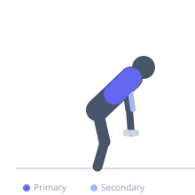

Exercise guide / Kroc Row with Strict Pause
Kroc Row with Strict Pause
The Kroc row with pause applies the heavy-load, high-rep philosophy of the original Kroc row but adds a 1-2 second isometric hold at peak contraction. The pause prevents the ballistic bounce common in standard Kroc rows and ensures each rep has genuine muscular engagement, combining the high metabolic demand of Kroc rows with the quality control of paused training.
Primary muscles
latissimus dorsi
rhomboid major
Secondary muscles
biceps brachii
trapezius middle
Stabilizers
erector spinae
Equipment
Standard Barbell


Starting position
- One knee and hand braced on a bench. Heavy dumbbell in working hand, arm extended.
Setup
- Use a heavy dumbbell — Kroc rows are characterized by maximal loaded sets. The pause reduces the number of reps achievable vs. standard Kroc rows.
Steps
- Step 1: Row the heavy dumbbell explosively to the hip.
- Step 2: At the top, hold for 1-2 seconds with elbow as high as possible.
- Step 3: Lower under control — do not simply drop the weight.
- Step 4: Repeat for maximum quality reps.
- Step 5: Perform one set per side to near failure.
Coaching cues
- Full pause at the top — count it
- Row to the hip, not the chest
- Think about accumulating quality reps, not just quantity
Breathing
- Breathe continuously with the rhythm of the reps.
Range of motion
- Full arm extension to elbow above torso.
Tempo
- 1-2 hold-1-0
Common mistakes
- Turning the pause into a pendulum swing — the weight must pause, not just slow
- Using a weight so heavy that the torso rotates dramatically
Safety
- Straps are acceptable for Kroc rows as grip is not the training target
- High-rep heavy sets tax the lower back — maintain braced core throughout
Training
- strength: 10–20 reps
- hypertrophy: 15–30 reps
- strength: 1–3 sets
- Rest: {'strength': 180}